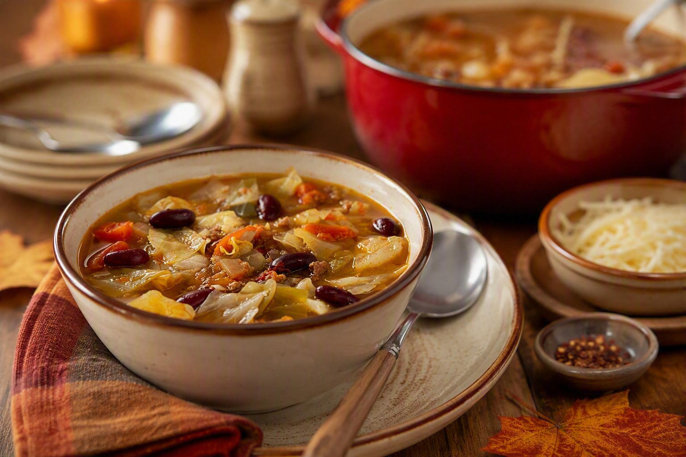

Home
Cabbage and Beef Soup

Description
This hearty and delicious soup is one of my fall and winter season favorites. It tastes great on its own, or you can layer it over tortilla chips for a new take on tortilla soup.
The recipe makes a large pot, but the good news is that it freezes and reheats well if you live alone. Before I had a household of hungry family members, I used to make a pot and put individual sized servings in freezer storage bags, then take one out at a time when I didn't have time to cook, reheating on the stove and breaking up the "soup brick" as it started to thaw over the heat.
Ingredients
- 1 Tbs ghee or tallow
- 1 lb lean ground beef
- 1/2 tsp garlic salt
- 1/4 tsp garlic powder
- 1/4 tsp freshly ground black pepper
- 1 tsp kosher salt
- 2 celery stalks, chopped
- 2 carrots, thinly sliced
- 1 16 oz can of kidney beans, undrained
- 1/2 medium head of red cabbage, chopped
- 1 28 oz can of tomatoes, chopped and the liquid reserved
- 3 1/2 cups water (or my recommended alternative is organic bone broth)
- 2 Tbs Worcesterhire Sauce
- 1 tsp soy sauce
Steps
- In a dutch oven or large stock pot, heat the ghee or tallow over medium heat until it is hot and shimmering. Using ghee or tallow will sweeten up the cabbage and give the beef a lovely caramelized taste.
- Brown the ground beef, resisting the urge to flip and stir until the edges are beginning to darken and caramelize.
- Add all the remaining ingredients and bring to a boil.
- Reduce heat and simmer, covred, for one hour.